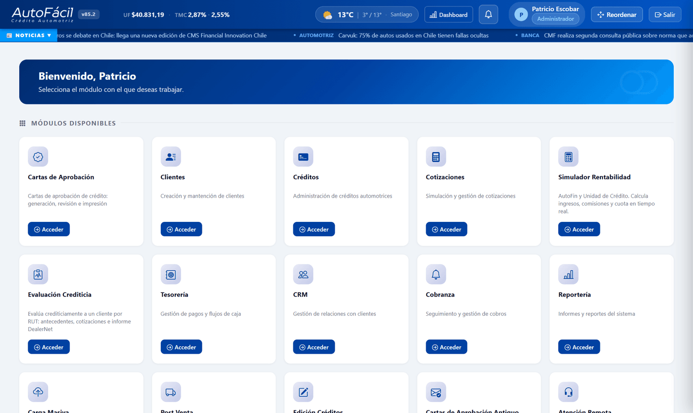
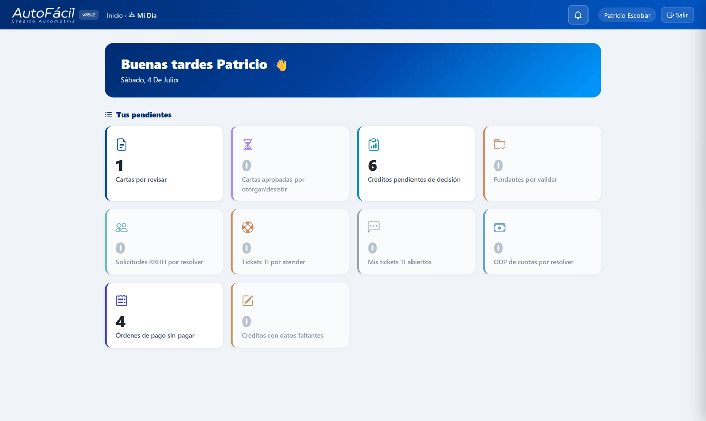
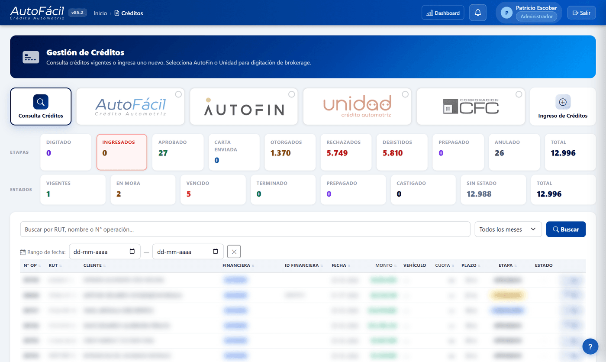
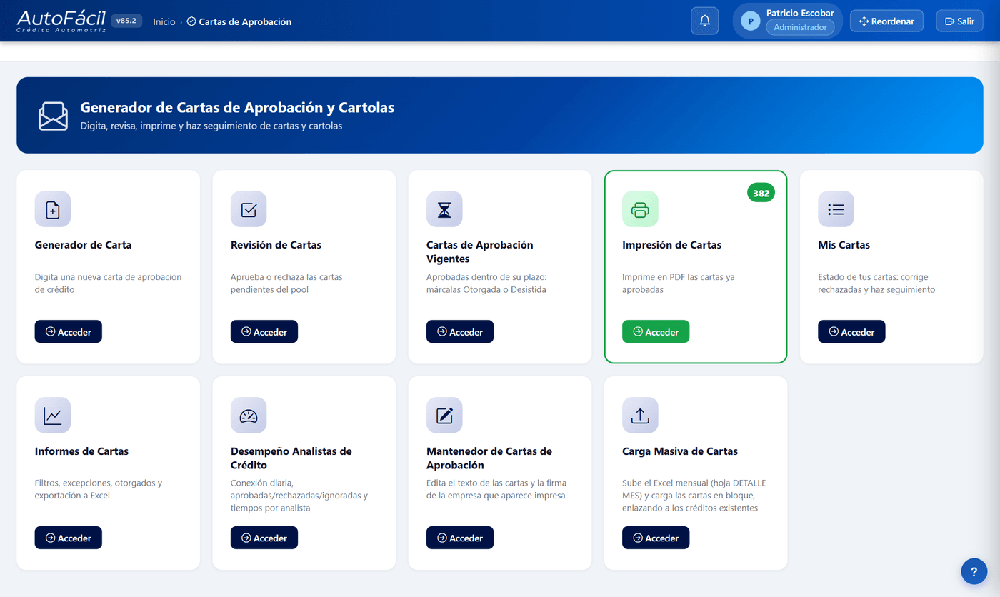
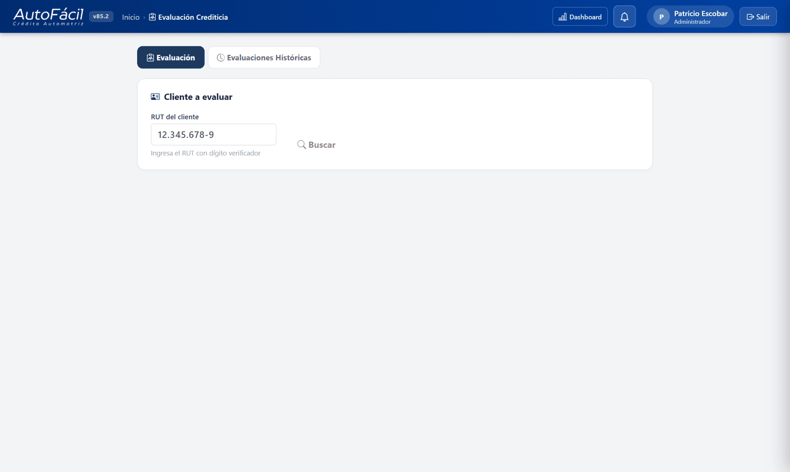
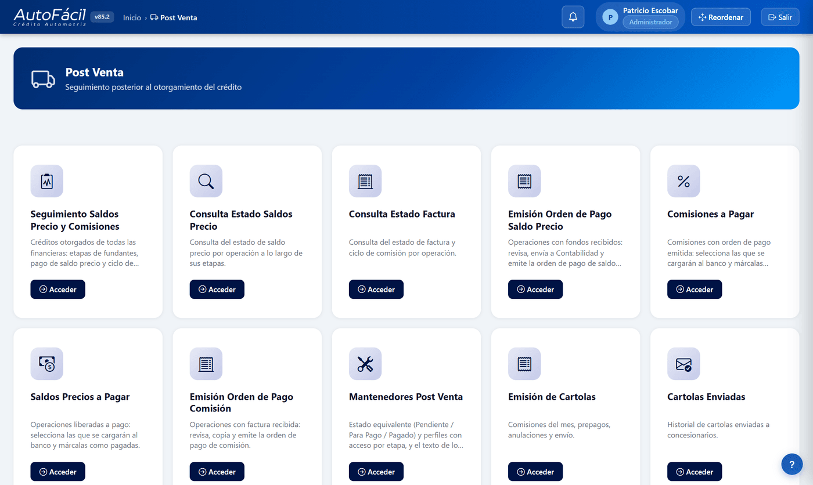
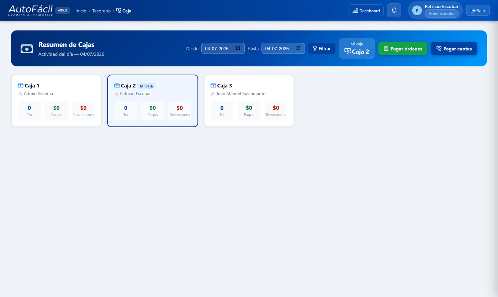
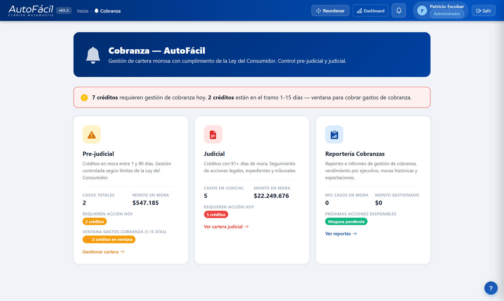
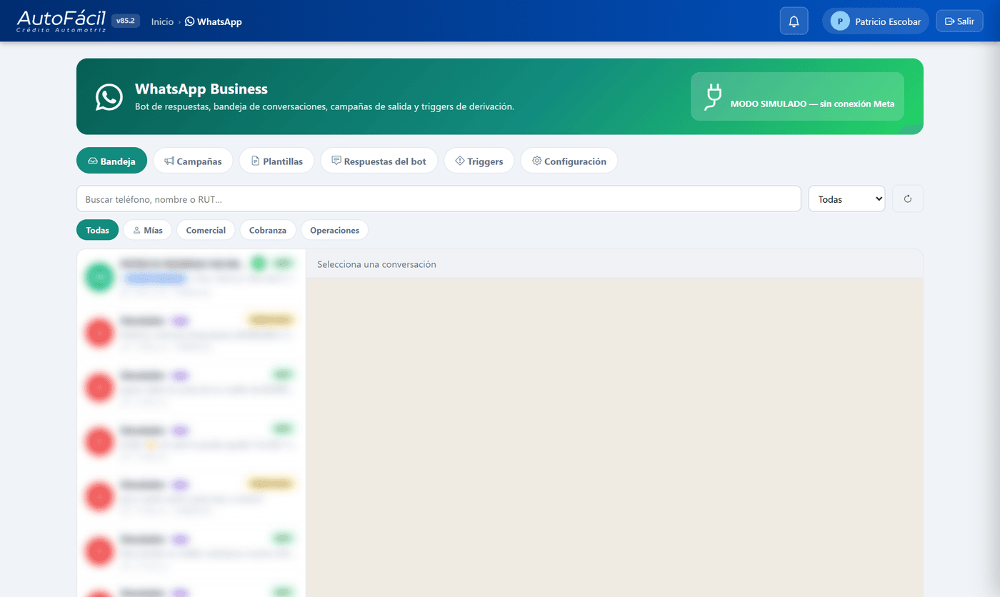
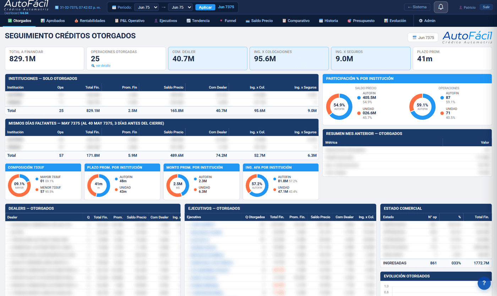

Cómo hacer el trabajo del día a día en el Business Suite, módulo por módulo. Lo que ves depende de tu perfil: si un módulo no aparece en tu Home, no tienes el permiso (pídelo al Administrador).
Entrar: abre el Suite en tu navegador → correo y contraseña. El primer ingreso pide cambiar la clave. ¿La olvidaste? El Administrador puede resetearla desde Usuarios.
Instalar como app: en Chrome/Edge, menú ⋮ → "Instalar AutoFácil". Queda como aplicación con su propio ícono.
Home: muestra solo los módulos que tu perfil puede usar. La campana 🔔 trae tus alertas (activa el push para recibirlas fuera del Suite).
Barra superior: los valores del día (UF, TMC, dólar, inflación), el clima y el ticker de noticias de la industria (banca y automotriz) — el contexto del negocio sin salir del Suite.
Mi Día: tu panel personal — pendientes reales según tu rol, colocaciones del mes y tu calendario.
Ayuda contextual: el botón "?" flotante explica la página donde estás (si tiene ayuda cargada).
Cambiar contraseña: clic en tu nombre (arriba a la derecha) → Cambiar contraseña.

El Home: solo los módulos que tu perfil puede usar, con indicadores UF/TMC y la campana de alertas arriba.

Mi Día: tus pendientes reales según tu rol, de un vistazo.
2. Créditos y carga masiva
Crear o consultar créditos
Listado: Créditos → filtros por financiera, estado y búsqueda por OP/RUT/nombre. Paginado de a 100.
N° OP es nuestro correlativo único; ID Financiera es el número de la institución. No son lo mismo.
Crear crédito: botón Nuevo → completa los datos; las comisiones e ingresos se calculan solos.

Gestión de Créditos: contadores por etapa y estado, filtros por financiera y búsqueda (datos de clientes difuminados).
Carga masiva
Créditos → Carga Masiva → sube el Excel → el validador (con IA) marca anomalías (RUT, montos, dealers, fechas) antes de insertar → confirma. Los créditos que quedaron incompletos entran a la cola de Digitación de Datos Faltantes: se toman de a uno (bloqueo de 20 min por usuario), los campos faltantes en rojo.
3. Cartas de Aprobación
Emitir: Cartas → Nueva. Puedes subir la Carta Compromiso y Cotización (PDF de la financiera) y los campos se autocompletan. El cuadro de Preferencia Financiera indica qué financiera corresponde según cuotas y saldo (bloquea combinaciones no permitidas).
Rentabilidad: el botón Rentabilidad (permiso especial) compara AutoFin vs UAC antes de decidir.
Vigencia: la carta aprobada vive 5 días corridos (configurable). En Cartas Vigentes se decide: Otorgar (crea el crédito OTORGADO y cartola) o Desistir. Si vence sola, pasa a DESISTIDA y ya no se puede imprimir.
La comisión del dealer que rige es la de la carta (negociación especial). Si la carta no la trae, se calcula por parámetros.

El módulo de Cartas: generar, revisar (pool de analistas), Cartas Vigentes para Otorgar/Desistir, impresión y carga masiva.
4. Evaluación Crediticia
Ingresa el RUT → aparece la ficha: datos personales, antigüedad de la información y cotizaciones guardadas (incluye las que hizo Facilito por WhatsApp).
Selecciona la cotización del auto que el cliente quiere (define la cuota que se evaluará contra su renta).
Si los antecedentes tienen más de 30 días, carga información nueva (ocupación + documentos; las liquidaciones se validan con IA).
Evaluar → la IA cruza todo (incluye informes DealerNet en vivo) y entrega el análisis para tu decisión.

Evaluación Crediticia: todo parte por el RUT del cliente.
5. Post Venta y cartolas
Seguimiento: cada crédito otorgado avanza por etapas de Saldo Precio y de Comisión. Las etapas se marcan a mano o solas (ej: FUNDANTES RECIBIDOS se marca al aprobar los fundantes).
Cartolas: se generan acumulativas por estado A PAGAR (cruzan meses) y se envían automáticamente al dealer, con aviso al ejecutivo comercial. Al enviarlas se estampa el Mes Cartola.
Facturas de dealers: cada factura queda registrada en el sistema y se cuadra contra el total de la cartola (mismo monto bruto en cada operación); si no cuadra, se marca en rojo.
Pago de saldos: definir fondos → seleccionar saldos → generar nómina → emitir orden de pago. Al pagarse, el informe de saldos precio pagados se envía a Operaciones y al ejecutivo comercial de cada operación.

Post Venta: seguimiento, consultas de estado, emisión de órdenes de pago y cartolas.
6. Seguimiento Fundantes
Ejecutivo: abre tu operación otorgada (AutoFin/Unidad) → sube los documentos fundantes que exige la matriz según financiera y antigüedad — el sistema renombra cada documento automáticamente (tipo de documento + operación) → Enviar. Operaciones: revisa y marca CERRADO (aprueba) o RECHAZADO con comentario — el rechazo le avisa al ejecutivo para corregir y reenviar.
Flujo trazado etapa por etapa: fundantes recibidos → enviados → fondos liberados a pago → fondos recibidos. Cada etapa queda con fecha, alimentando el flujo de caja del negocio y el seguimiento del Post Venta.
7. Tesorería: caja, cuotas y ODP
Caja: selecciona la caja → busca el crédito → paga cuotas individuales o en lote. El comprobante lleva timbre PAGADO con caja, fecha y hora.
Orden de pago de cuotas (ODP): si el pago requiere aprobación, se emite ODP desde la caja o la ficha; Tesorería la aprueba y el pago se registra con correo de respaldo automático.
Prepago: desde la caja, botón Prepago — usa el mismo motor del certificado (cuotas + comisión + interés corriente) y permite condonar según atribuciones. El crédito queda PREPAGADO.
Órdenes de pago a proveedores: módulo Órdenes de Pago — emisión con correlativo único OP-, historial y base de proveedores.

Resumen de Cajas: cada cajero ve su caja, con pagos, reversiones y los botones Pagar órdenes / Pagar cuotas.
8. Cobranza
La cartera propia muestra días de mora por crédito; la mora y los gastos de cobranza se calculan al día con el motor único (mismos valores en caja, portal y certificados).
Automatizaciones de Cobranza (card en Cobranza → mantenedor unificado): dos motores automáticos para la cartera en mora. Correo por tramo — plantillas según los días de atraso, con cooldown y tope de envíos. WhatsApp por secuencia numerada — cada crédito recibe el siguiente mensaje de la lista (N°1, luego N°2…), nunca se repite el mismo; usa plantillas HSM aprobadas por Meta (el estatus APROBADA/PENDIENTE se ve ahí mismo) y el resultado evoluciona con la confirmación de Meta: Enviado → Entregado → Leído. Toda gestión de ambos motores queda registrada en la bitácora del cliente (CRM) con su resultado. Ambos nacen desactivados y respetan Modo Desarrollo. Además se pueden lanzar campañas WhatsApp puntuales a la cartera en mora desde el módulo WhatsApp o Campañas Masivas.
Ley del Consumidor — el sistema la hace cumplir solo: los gastos de cobranza se cobran recién desde el día 21 de atraso (tramos marginales en UF, con la UF fijada ese día), y las gestiones tienen tope semanal — 1 telefónica o presencial y 2 remotas por semana: al alcanzar el límite, el sistema bloquea la gestión de más. El panel de disponibilidad semanal se ve en Pre-judicial y Judicial.
Las gestiones se registran en CRM; los compromisos de pago quedan en la bitácora del crédito.

Cobranza: aviso del día, y la cartera separada en Pre-judicial (Ley del Consumidor) y Judicial.
9. WhatsApp y Facilito
Facilito atiende el número del negocio: cotiza, preevalúa por RUT e informa dónde pagar. Deriva cuando el cliente pide una persona o cuando no puede resolver algo importante.
Bandeja (módulo WhatsApp): las conversaciones derivadas llegan con push "¿quién lo toma?" — el primero que la toma responde por el número del negocio. Escribe / para respuestas rápidas. Pasadas 24h del último mensaje del cliente la conversación queda en solo lectura (regla de Meta).
App del teléfono: instala AF WhatsApp (abre /whatsapp/, inicia sesión en la app, "Agregar a pantalla de inicio", campana → Activar push). Los ejecutivos ven solo sus conversaciones.
Fuera de horario o si el cliente prefiere que lo llamen: la oportunidad llega por correo al ejecutivo de turno (round-robin) con la cotización y copia al Jefe Comercial — hay que reportar el resultado, se revisa en comité.
Campañas: mensajes masivos a cartera en mora, vigentes o lista manual. Para escribir fuera de la ventana 24h se usan plantillas aprobadas por Meta (pestaña Plantillas, con revisión IA obligatoria antes de enviar).
Aviso de vencimiento automático: con el interruptor activado (Configuración), el sistema envía solo — todos los días a las 10:00 — un WhatsApp a cada cliente cuya cuota AutoFácil vence en N días (configurable, default 2), usando la plantilla aprobada aviso_vencimiento; si además tiene cuotas impagas usa aviso_vencimiento_mora con el monto al día de hoy (mora y gastos del motor de cobranza) y la suma total. Los datos bancarios salen de la fuente única, cada envío queda como gestión en el CRM y nunca se avisa dos veces la misma cuota. El botón "Probar ahora" muestra quiénes recibirían el aviso sin enviar nada. Nace desactivado.

La bandeja WhatsApp: conversaciones a la izquierda (difuminadas), chat a la derecha, y las pestañas Campañas, Plantillas, Respuestas, Triggers y Configuración.
10. Atención Remota: chat y video con dealers
Para el dealer: entra con su cuenta (email y clave, o link de acceso directo) y chatea con AutoFácil desde el navegador — puede adjuntar documentos en la conversación.
Para el equipo interno: módulo Atención Remota → la bandeja muestra los dealers esperando; puedes atender hasta 3 conversaciones en paralelo. Los documentos compartidos quedan en el hilo.
Video para el curse: desde la misma conversación se inicia una videollamada en el navegador (sin instalar nada) para acompañar al dealer en el curse del crédito: revisar documentos juntos, resolver dudas de digitación y cerrar la operación con apoyo AutoFácil en vivo.
Cuentas de dealers: se crean y administran desde el mismo módulo (o el dealer solicita acceso y Operaciones aprueba).
11. Portales del Dealer y del Cliente
Portal del Dealer — dealers.autofacilchile.cl
El dealer ve sus operaciones (solo las suyas): estado de cada una, qué documentos le faltan para el pago, sus cartolas/comisiones, el estado de sus saldos precio y la fecha estimada de pago — sin llamar a preguntar.
Tiene chat con su ejecutivo y un asistente IA que responde preguntas sobre sus operaciones.
Simulador de Cuotas (botón Simulador): ingresa el monto a financiar y ve la cuota a 12/24/36/48 meses con su CAE. Calcula con el mismo motor del módulo Cotizaciones (tasas del mantenedor Tasas por tramo 200 UF, gastos y seguros de Parámetros de Crédito). El mismo popup existe como card Simulador Rápido en la Home interna.
Pre-Aprobación en línea (pestaña Pre-Aprobación): el dealer ingresa RUT del cliente + precio + pie + año del auto y el sistema evalúa al instante con las fuentes internas (renta líquida ≤30% de carga, informes comerciales limpios, antigüedad máxima del vehículo, elegibilidad AutoFin del Cuadro Preferencia Financiera). Si aprueba, ofrece las cuotas por plazo y el botón "Sí, contáctame" lleva al chat indicando cuántos ejecutivos hay conectados/disponibles; además se envía correo automático al Jefe Comercial con el detalle para seguimiento. Al dealer nunca se le muestran los datos del cliente, solo el veredicto.
Soporte interno: si un dealer no puede entrar, revisar su cuenta en Atención Remota (activa, email correcto, regenerar link de acceso).
Portal del Cliente — clientes.autofacilchile.cl
Primera vez: el cliente pone su RUT → recibe un código de 6 dígitos en su correo registrado → crea su clave. Si el correo registrado está malo, hay que corregirlo en la ficha del cliente antes.
Ve sus créditos AutoFácil con la tabla de desarrollo y los valores al día de hoy (cuota + mora + gastos), sus comprobantes y dónde pagar. Los créditos cursados con AutoFin/Unidad aparecen con la indicación de la financiera y sus canales de pago.
Bloqueo de seguridad: 5 intentos fallidos = 15 minutos de espera.
12. CRM y campañas
Gestiones de contacto: registra cada llamada/gestión con el cliente (resultado, compromiso, próximo paso). Todo alimenta la bitácora del crédito.
Campañas de outbound: arma la lista objetivo y gestiona los contactos de la campaña; las Estadísticas CRM muestran el rendimiento.
Las campañas por WhatsApp (marketing o cobranza) se hacen desde el módulo WhatsApp: audiencias de cartera en mora, créditos vigentes o lista manual, con plantillas aprobadas por Meta. Los correos automáticos de cobranza por tramo de mora se configuran en el mantenedor Cobranza Mora.
Campañas Masivas: el módulo dedicado con mail-merge, grupo de control y medición de conversión — ver la sección 13 con el manual completo.
13. Campañas Masivas (Mail y WhatsApp)
Qué es: el módulo para enviar mensajes masivos personalizados — por correo o WhatsApp — y luego medir con datos si la campaña funcionó. Sirve para VENTA (marketing: ofrecer créditos, renovación) y COBRANZA (recordar cuotas e invitar a ponerse al día). Cada mensaje se arma a la medida de cada cliente con variables, igual que la correspondencia de Word. Antes de la primera campaña real, abre una campaña TEST de la bandeja y recorre su informe.
Conceptos básicos
Término
Qué significa
Correlativo
Número único de la campaña (CM-0007). Con él se busca, se lee el informe y aparece en las gestiones del CRM.
Canal
MAIL (correo HTML) o WSP (texto de WhatsApp). Se define por la card desde la que se crea; no se cambia después.
Objetivo
VENTA o COBRANZA. Define los parámetros para armar la audiencia desde la BD y cómo se mide la conversión (ventas vs. pagos).
Grupo de control
Clientes que NO se contactan a propósito, para comparar contra los contactados (champion–challenger).
Conversión
El resultado buscado: en VENTA que el cliente tome un crédito; en COBRANZA que pague su cuota — en los 30 días siguientes al envío.
BORRADOR / ENVIADA
En BORRADOR todo es editable; al enviar queda congelada y solo se consulta el informe.
Crear una campaña (los 7 pasos del editor)
Home → Campañas Masivas → card Mail o WhatsApp → Nueva campaña → objetivo + descripción → Crear (asigna el correlativo). Luego: 2 variables → 3 data → 4 control/exclusiones → 5 contenido → 6 vista previa → 7 envío. Presiona Guardar tras cambiar el contenido.
Las variables, una por una (paso 2 — máximo 10)
Definen las columnas de la plantilla de carga y los botones {{variable}} que puedes insertar en asunto y texto:
Variable
Para qué sirve
Formato en la carga
Cómo la ve el cliente
RUT
Identificar al cliente; clave para medir conversión y para el decil de control
12345678-9 (con o sin puntos)
Tal cual
Nombre / Apellidos
Personalizar el saludo
Texto
Tal cual
Género
Segmentar o personalizar
F / M
Tal cual
Saludo
"Estimada"/"Estimado" ya resuelto — evita errores de género
Texto
Tal cual
Monto del Crédito $ / Pie $ / Valor Cuota / Seguros (Desgravamen, Cesantía, RDH)
Cifras de la oferta o de la deuda
Número sin puntos: 8500000
$8.500.000 (formato pesos automático)
Pie % / Tasa %
Porcentajes
Número: 25 · 2,1
25% · 2,1%
Cuotas del Crédito
Plazo en meses
Número: 36
Tal cual
Dato Especial 1, 2 y 3
Comodines de texto libre: fecha límite, sucursal, promo…
Texto libre
Tal cual
La plantilla de carga siempre incluye además email y telefono: el email es obligatorio para Mail y el teléfono para WhatsApp (+56 9 1234 5678 o 912345678 — se normaliza solo).
Cargar la data (paso 3)
Carga manual (Excel/CSV): para clientes fuera de nuestras bases. Elige primero las variables → Descargar plantilla CSV (trae los encabezados y una fila de ejemplo) → llénala en Excel (una fila por cliente, separador ;) → Subir CSV. El sistema calcula el decil de cada RUT e informa cuántos quedaron en campaña y en control.
Desde nuestras bases, por parámetros: COBRANZA = días de mora (desde/hasta) + capital adeudado mínimo → clientes con cuotas vencidas. VENTA = meses para el término del crédito + monto mínimo de crédito a ofrecer (ej: desde $3.000.000) + renta mínima + estimación de renta desde la cuota (ej: 25 → se asume que la cuota es el 25% de la renta, para clientes sin renta registrada; si el crédito antiguo no trae cuota, se calcula con la cuota francesa del motor único). Los sin dato de contacto se cargan igual: se completan con DealerNet en el paso 4 o quedarán con error al enviar.
Volver a generar (o re-subir el CSV) reemplaza la lista completa — no se duplica.
Grupo de control y exclusiones (paso 4)
El decil es el último dígito del RUT antes del guion (12.345.678-9 → decil 8). Marcar deciles aparta ~10% de la lista por cada uno como grupo CONTROL: no reciben el mensaje, pero el informe mide cuántos convirtieron "solos". Ejemplo: campaña convierte 33% y control 10% → la campaña aportó un uplift real. Con listas chicas (<200) usa 1–2 deciles o ninguno. También puedes excluir regiones (feriado regional, zona de emergencia) cuando la data viene de nuestras bases.
El contenido (paso 5)
Mail: 3 plantillas de diseño — Banner AutoFácil azul (formal), Solo logo (sobria) y Gran título (titular grande con color configurable, acepta variables). Asunto con variables y emojis de la biblioteca (😀); remitente seleccionable (Sistema o Cobranza). El pie con los datos de AutoFácil se agrega solo.
WhatsApp: las campañas de salida van con plantilla HSM aprobada por Meta (modo recomendado y por defecto): eliges la plantilla desde la lista de aprobadas, ves su texto y mapeas cada variable {{1}}, {{2}}… a un campo de la campaña (nombre, monto, cuotas…). Así el mensaje llega a cualquier contacto, frío o no. Si necesitas una plantilla nueva, se crea desde el módulo WhatsApp (con revisión IA) y Meta la aprueba. El modo texto libre (con variables y emojis) queda como alternativa solo para clientes con conversación activa (<24 h, regla de Meta).
Escribir: texto normal + botones {{variable}}. Ej.: {{saludo}} {{nombre}}: tenemos preaprobado {{monto_credito}} en {{cuotas}} cuotas de {{valor_cuota}} 🚗 → "Estimada María: tenemos preaprobado $8.500.000 en 36 cuotas de $285.000 🚗". Si a un cliente le falta un dato, la variable sale vacía — revisa la vista previa.
Vista previa tipo correspondencia (paso 6)
Con las flechas ◀ ▶ recorres los destinatarios uno a uno viendo exactamente lo que recibirá cada cliente (el correo con su diseño y asunto, o la burbuja de WhatsApp). Si cambiaste el texto: Guardar → Actualizar.
El envío (paso 7)
Envía por lotes con avance en pantalla (enviados / con error / pendientes). El grupo CONTROL se excluye solo.
Cada mensaje queda como gestión en el CRM ("Campaña Venta" o "Campaña Cobranza" con el correlativo).
La campaña pasa a ENVIADA y se congela. Con Modo Desarrollo activo, los correos se desvían a las casillas de prueba.
Estados de cada destinatario
Estado
Qué significa
Cómo se produce
PENDIENTE
Aún no se le envía
Antes del envío, o grupo CONTROL (nunca se les envía)
ENVIADO
El mensaje salió bien
El servidor de correo / Meta lo aceptó
LEÍDO
El cliente abrió el correo
Automático: el mail lleva un píxel de lectura invisible
ERROR
No se pudo enviar
Sin email/teléfono, casilla inexistente, número sin WhatsApp, fuera de ventana 24 h — el motivo queda anotado
NO RECIBIDO
Salió pero rebotó
Rebotes posteriores
En el informe, cada recuadro de estado es clicable: abre el detalle de esos destinatarios con botón Exportar Excel.
Informes: conversión y champion–challenger
Conversión: VENTA = crédito OTORGADO del RUT en los 30 días post-envío (guarda día y monto); COBRANZA = pago de cuota en los 30 días post-envío. Se corre con Recalcular conversión — hazlo cada 2–3 días para ver la curva crecer.
Champion–Challenger: tres cuadros — tasa de la CAMPAÑA, tasa del CONTROL (conversiones naturales) y el UPLIFT: cuánto mejor lo hizo la campaña vs. no hacer nada. Uplift ~0 = el mensaje no movió la aguja.
Torta 3D de estados (salud del envío: mucho ERROR = data de contacto mala) y curva de conversión acumulada por día (campaña vs. control): muestra cuántos días tarda en reaccionar el cliente y cuándo la curva se aplana.
Análisis de la audiencia (paso 4, antes de enviar — dos análisis separados y ambos opcionales): (a) Análisis de CRÉDITO (política): verifica que la cuota no supere la carga máxima cuota/renta % que definas (usa la renta registrada o la estimada desde la cuota) y clasifica CUMPLE / NO CUMPLE / S-I, con botón para excluir del envío a los NO CUMPLE; (b) Análisis de INFORMES (DealerNet + IA): consulta los informes de cada RUT (caché 15 días, tiene costo) y clasifica BAJO / MEDIO / ALTO, con botón para excluir a los de riesgo ALTO. Los excluidos nunca reciben el mensaje y ambas distribuciones quedan a la vista.
Contactos faltantes desde DealerNet: para los destinatarios sin email (Mail) o sin teléfono (WhatsApp), el botón "Buscar contactos en DealerNet" consulta el Perfil Comercial (DealerNet) — que trae nombre, correos y teléfonos — con caché de 15 días (si el informe ya se pidió, no se paga de nuevo). Nada se asigna solo: en "Revisar uno a uno" ves el nombre según DealerNet junto al nuestro (con aviso si no coincide el apellido) y eliges el correo (los que contienen el apellido del cliente aparecen primero), o marcas los 1, 2 o 3 teléfonos con más probabilidad de contacto (rankeados por frecuencia en los informes, móviles primero; el RUT disfrazado de teléfono se descarta solo). En WhatsApp el envío intenta el primer teléfono y, si falla, sigue con los alternativos.
Preguntas frecuentes
¿Editar una campaña enviada? No: queda congelada para que el informe sea fiel. Crea una nueva.
¿Por qué WhatsApp marca tantos ERROR? Ventana de 24 h de Meta — para audiencias frías usa plantilla HSM aprobada.
¿Subí dos veces el CSV? La segunda carga reemplaza a la primera; no se duplica.
¿Borrar una campaña? Solo en BORRADOR (las enviadas son historial y evidencia).
¿El control queda "quemado"? No: no se les envió nada; en la próxima campaña puedes usar otros deciles.
¿Las campañas TEST? Demostración con datos inventados para explorar el informe; no se pueden enviar ni recalcular.
Receta corta: card Mail → Nueva → objetivo y descripción → 5–6 variables → data desde la BD por parámetros → deciles 8 y 9 de control → plantilla banner + asunto con {{nombre}} y un emoji → recorre 10 registros en la vista previa → Enviar. A los 3 días: Recalcular conversión y lee el uplift.
14. Gestión comercial
Comisiones: Comisiones → Revisión — el cálculo mensual por ejecutivo sale solo (piso, incentivo, ajustes). Los supervisores ven a sus asignados.
Metas y bonos en línea: revisa tu avance de cumplimiento del mes y qué te falta para la meta (colocaciones, mix de financieras, calidad) — así sabes dónde empujar para maximizar tu comisión antes del cierre.
Simulador de Rentabilidad (negociación avanzada): antes de negociar una comisión especial con un dealer, simula ingresos, comisión y cuota por financiera en tiempo real, y consulta el cuadro de Financieras Preferentes para saber con cuál conviene cursar. En Cartas, el botón Rentabilidad (permiso especial) compara AutoFin vs Unidad para esa operación.
Visitas a dealers: agenda tu visita (cupos diarios configurados), registra la gestión Positivo/Negativo y el seguimiento. El mapa de dealers ayuda a planificar la ruta.
Informe diario de ventas: llega solo al correo (L-S 8:30). El ranking y la carrera de colocaciones aparecen al entrar al Suite.
15. RRHH, Compras y Tickets
Recursos Humanos es módulo propio del Home (estilo Buk): Mi Ficha (datos laborales, previsión, contacto editable y carpeta digital con contrato/anexos), Directorio del equipo, Colaboradores (RRHH gestiona fichas, sueldo base y documentos), Ausencias y Permisos (licencias con adjunto, permisos, medio día — aprueba tu jefatura directa o RRHH) y Vacaciones con saldo automático (1,25 días hábiles devengados por mes trabajado). Certificado de antigüedad: se genera con firma electrónica y QR verificable.
Remuneraciones (RRHH): libro mensual de liquidaciones — gratificación legal topada, AFP según administradora, salud 7%, AFC (indefinidos) e impuesto único por tramos UTM; las comisiones se llenan solas desde el motor de Comisiones Ejecutivos y son editables antes de emitir. Emitir mes congela las liquidaciones y cada colaborador las ve/imprime desde Mi Ficha. Los indicadores (tasas AFP, IMM, topes) viven en el mantenedor Indicadores de Remuneraciones: UF/UTM se actualizan solas (API CMF) y los días 1-3 de cada mes un proceso con IA revisa la página de Previred y propone los cambios detectados por correo — nada se aplica sin confirmación (Aplicar/Descartar en el mantenedor). El motor está validado al peso contra una liquidación real de AVSOFT (mayo 2026): gratificación, AFP, salud 7% + adicional Isapre (plan pactado en UF, se registra en la ficha del colaborador; descuenta al líquido pero no rebaja el impuesto), AFC e impuesto único — los 8 valores exactos. Soporta días trabajados (sueldo proporcional en 30avos, editable por mes) y muestra los aportes del empleador (SIS, AFC empleador, mutual — paramétricos en el mantenedor) con el costo empresa total en cada liquidación. La card Remuneraciones es un hub: dentro está Liquidaciones de Sueldo — un libro de solo lectura donde nada se digita porque todo viene de su fuente: los días trabajados se calculan de la fecha de ingreso y las licencias médicas registradas (ej: ingresó el 10 → 21/30), las comisiones vienen del motor de Comisiones y deben estar APROBADAS en Revisión de Comisiones para poder emitir (el libro avisa en rojo quiénes faltan), los otros haberes vienen de Adicionales y los otros descuentos de Descuentos. Cada fila tiene vista previa de la liquidación completa (ícono recibo) antes de emitir. Al EMITIR se valida días, se congelan y se envía cada liquidación al correo del colaborador, el mantenedor de Indicadores, y los futuros módulos de Licencias Médicas y Vacaciones (pago con promedio de últimos 3 meses para rentas variables, art. 71 CT). Licencias Médicas es una card propia de Recursos Humanos (ya no está en Ausencias): RRHH selecciona al colaborador, las fechas de inicio y término (ambas inclusive), el sistema calcula los días hábiles y al grabar envía el correo al supervisor directo. Sin medio día, sin flujo de aprobación, con adjunto opcional. La pestaña Resumen muestra las licencias por mes (cantidad, personas, días hábiles), por persona (acumulado y última) y el detalle exportable a Excel; una jefatura que entre ve solo a su equipo. Adicionales Remuneración (card en el hub): bonos, aguinaldos, viáticos y otros pagos del mes por colaborador — eliges la causal (define sola si es imponible o no; "Otro" permite describir y decidir), el monto con formato automático, y el checkbox Líquido cuando el colaborador debe recibir exactamente ese monto (entra como haber no imponible). Al guardar, el formulario queda listo para el siguiente. Los adicionales se suman solos al libro de liquidaciones (imponibles → Otros Imponibles; no imponibles/líquidos → Otros No Imponibles) y la pestaña Detalle del mes muestra todos con totales y export a Excel. Cuando el mes se EMITE, el módulo queda bloqueado para nuevos ingresos (antes de eso, cada adicional se puede eliminar con el basurero del Detalle). Descuentos Remuneración (card en el hub): Anticipo (capital ÷ N meses), Préstamo al personal (indicas tasa de interés mensual y cuotas — la tasa no puede superar la TMC vigente y la cuota se calcula francesa, solo capital + interés, con preview antes de guardar), Pago en exceso (con el mes de referencia) y Descuentos permanentes (Orden Tribunal, Orden TGR, APV u Otro con descripción — mensuales hasta anularse). Todas las cuotas parten en la próxima remuneración y caen solas en "Otros Dcto." del libro. Pestañas Cuotas del mes (con totales) y Todos los descuentos, ambas exportables a Excel; anular detiene las cuotas futuras sin tocar lo ya descontado.
Compras: Soporte → Compras — catálogo según tu perfil, el despacho llega a tu parque o Casa Matriz.
Reportar a TI: Soporte → ticket con motivo; tiene SLA y escalamiento automático.
16. Reportería, BI y bitácora
Reportería Tailor Made: reportes por período, financiera y dimensiones del negocio, exportables a Excel.
Cartera de Créditos: reporte con gráficos 3D — distribución por etapa, monto otorgado por financiera, colocaciones de los últimos 12 meses y ranking por ejecutivo, con filtro por fecha de otorgamiento.
Cobranza y Mora: reporte con gráficos 3D — monto y cuotas vencidas por tramo, tasa de mora, recuperación mensual (cuotas pagadas con atraso) y top de deudores con botón directo a gestionar en Cobranza.
Pregúntale a AutoFácil: BI conversacional — haz preguntas de negocio en lenguaje natural sobre los datos del Suite.
Bitácora de un Crédito: busca por RUT, N° OP o ID Financiera y obtén la línea de tiempo completa: cliente, informes, cartas, pagos, gestiones y cambios.
Dashboard: resumen ejecutivo de colocaciones en línea. Compara el mes en curso contra los mismos días del mes anterior, contra el presupuesto y contra la evolución histórica; las pestañas Ejecutivos y Dealers muestran el detalle de cada uno con sus caídas marcadas en rojo.
Certificados: módulo Certificados — 5 tipos de certificados para clientes, con firma electrónica y QR verificable en línea.
Informes DealerNet: consulta de antecedentes comerciales por RUT (informe en vivo, con costo por consulta y caché de 15 días).

El Dashboard: KPIs del mes, participación por institución, dealers y ejecutivos (las cifras de la imagen son ficticias).
Regla de oro: si un número se ve raro, no lo corrijas a mano en una planilla — repórtalo. En el Suite cada cifra tiene un motor único: si se corrige, se corrige una sola vez y para todos.
17. Contabilidad (reemplazo de AVSOFT)
La idea en una frase: la contabilidad es el registro ordenado de TODO lo que entra y sale de la empresa. Cada movimiento se anota dos veces (a eso se le llama partida doble): de dónde salió la plata y a dónde llegó. Si las dos anotaciones no suman lo mismo, el sistema no deja grabar — por eso la contabilidad "siempre cuadra".
Plan de Cuentas (mantenedor): el "árbol de casilleros" donde se clasifica cada peso. Son las mismas cuentas que usaba AVSOFT (Banco, Contratos, Proveedores, Sueldo Base…). Hay 5 familias: Activo = lo que la empresa TIENE; Pasivo = lo que DEBE; Patrimonio = el aporte de los dueños; Ingresos = lo que GANA; Gastos = lo que le CUESTA operar. Solo las cuentas "imputables" reciben movimientos; las demás son títulos para ordenar el árbol.
Comprobantes: cada anotación contable. Tres tipos: Ingreso (entró plata), Egreso (salió plata) y Traspaso (se movió entre casilleros, sin entrar ni salir). El formulario valida en vivo que Debe = Haber y numera solo (E-2026-00001…). Un comprobante grabado no se borra: si estaba malo, se ANULA con motivo y queda el rastro completo.
La magia — Reglas de Centralización: la mayoría de los comprobantes se escriben solos. Cuando alguien registra un pago o prepago en Caja, aprueba un castigo, paga una Orden de Pago, cierra las provisiones del mes o emite las liquidaciones de sueldo, el motor genera el asiento automáticamente según reglas configurables (qué cuenta al Debe, qué cuenta al Haber). Tú NO digitas nada: la contabilidad va siguiendo a la operación. El mantenedor muestra el log de cada ejecución del motor, y si algo no se pudo contabilizar, te dice por qué.
Libro Diario: la lista día a día de todos los asientos de un período. Libro Mayor: la película de UNA cuenta (ej: cuánto entró y salió del Banco este mes, con saldo inicial y acumulado). Los mismos libros que pedías a AVSOFT, pero al instante y con búsqueda.
Balance de Comprobación: el "chequeo médico" — todas las cuentas con sus sumas y saldos en 8 columnas. Sirve para revisar que todo cuadra antes de leer los estados financieros.
Estados Financieros: los dos informes que importan al final. Balance General = la FOTO a una fecha: qué tenemos, qué debemos y cuánto patrimonio hay (siempre Activo = Pasivo + Patrimonio + Resultado). Estado de Resultados = la PELÍCULA de un período: ingresos − gastos = utilidad o pérdida. Ambos imprimibles.
Cierre de ejercicio: una vez al año (botón en Estados Financieros) — deja en cero las cuentas de ingresos y gastos y guarda la utilidad o pérdida del año en "Resultados Acumulados" (patrimonio). Es como archivar la película del año para empezar la siguiente en limpio; la foto (balance) sigue intacta. Si te equivocaste, se anula el comprobante de cierre y listo. El Estado de Resultados además se puede filtrar por centro de costo cuando los asientos lo traen.
Informe Cierre Mensual (para la matriz): elige el mes y el sistema arma el paquete completo — Balance General al último día, Resultados del mes y acumulado del año — en pesos y dólares al tipo de cambio del cierre (dólar observado del último día del mes, precargado automáticamente y editable si la matriz pide otro). Incluye la sección Comentarios al cierre: escribe los puntos del mes o pide un Borrador con IA (compara el mes contra el anterior y propone las viñetas — tú siempre revisas, editas y guardas antes de que salga en el PDF). Botón Imprimir → PDF y listo para enviar a Ecuador.
Bitácora de Cierres: la memoria financiera de la empresa. Cada mes cerrado queda con su tarjeta: cifras clave (resultado, ingresos, gastos, activo, patrimonio) y un análisis del analista IA — resumen ejecutivo, variaciones contra el mes anterior y la tendencia de 6 meses, alertas y recomendaciones. Se genera con un botón por mes y queda guardado para siempre (re-analizar lo actualiza). Ideal para el directorio y para responder "¿qué pasó en marzo?" sin buscar en correos.
Historia: los libros de AVSOFT 2025 completo (3.831 comprobantes) y 2026 (enero a junio) ya están importados y cuadrados al peso, con el ejercicio 2025 cerrado — puedes consultar cualquier fecha desde el propio Suite.
Digitación pro: en Comprobantes escribes el código o el nombre de la cuenta y aparece la lista para elegir con las flechas; Enter avanza de celda y en la última agrega otra línea; si el asiento queda descuadrado, el botón "Cuadrar aquí" completa la diferencia. Los asientos que se repiten cada mes se guardan como plantilla (botón marcador): la próxima vez la eliges y solo digitas los montos. También puedes duplicar cualquier comprobante del listado como base del nuevo.
Asistente IA: botón ✨ en la digitación — describes la operación en tus palabras ("pagamos $450.000 de la factura 830 de JFR por el Santander") y la IA te propone el asiento completo con las cuentas del plan real. Nunca graba solo: revisa cuentas y montos y contabiliza tú.
Guardián Contable (mantenedor): revisa cada comprobante ANTES de grabarlo para que un error conceptual no entre a los libros — combinaciones de cuentas que no van juntas (ej. una provisión contra el banco), montos 10 veces sobre lo habitual de la cuenta, glosas vacías o cuentas que quedarían con saldo al revés. Cada regla puede ADVERTIR (te pregunta y decides) o BLOQUEAR (no deja grabar). El administrador agrega o ajusta reglas sin tocar código.
Candado de mes: cuando el informe mensual ya se envió a la matriz, ciérralo con el botón candado en Informe Cierre Mensual. Desde ahí nadie puede digitar ni anular comprobantes de ese mes (y los asientos automáticos quedan en el log del motor para regularizarlos). Reabrir se puede, pero queda auditado.
Investigar un número: en cualquier Balance o Estado Financiero haz clic en el código de la cuenta → se abre su Libro Mayor; clic en la fila → ves el comprobante completo con sus respaldos. Y en Libros está la pestaña Buscar: "todos los movimientos con la palabra NOTARIA", por cuenta, RUT o N° OP.
Respaldos: a cada comprobante puedes adjuntarle la factura PDF, el comprobante de transferencia o el contrato (máx 5 MB por archivo) desde el ojo 👁 del listado. Quien revise el asiento en un año tendrá el documento al lado.
Presentación Directorio: el PPT mensual de finanzas, pero armado solo con los libros — portada con KPIs, balance con variación contra el mes anterior, detalle de cuentas por cobrar y por pagar, resultados del mes y acumulados comparados contra el mismo período del año anterior, y caja y bancos. Los cuadros son los MISMOS de finanzas (formato Excel): Balance por rubros gerenciales en miles de pesos con columnas dic + enero→mes, y P&G con márgenes (Ordinario → Operativo Bruto → Operativo Neto → Utilidad) con % sobre ingresos y variación contra el año anterior; el mapeo cuenta→rubro es paramétrico (botón "Configurar rubros": prefijos de cuenta, gana el primero por orden, lo no asignado cae a "Otros"). Cada lámina tiene su recuadro de Hechos Relevantes: escríbelos tú o pide un Borrador IA con las cifras de esa lámina, revisa y guarda (quedan por mes). Imprime a PDF apaisado y esa es la presentación. Pendiente: comparación contra presupuesto (cuando exista el mantenedor de presupuesto). Además, con los botones Importar compras AVSOFT e Importar honorarios AVSOFT subes los exports mensuales (Compras "1 Línea" y Movimiento Honorarios) y la presentación agrega las láminas Detalle Compras (facturas del mes + top proveedores del año) y Honorarios (boletas con bruto/retención/líquido + top profesionales del año); los meses del archivo se reemplazan completos, así que re-importar es seguro.
Libros Auxiliares: el detalle completo documento a documento de lo importado de AVSOFT — pestañas Compras (facturas con neto/IVA/total, emisión y vencimiento), Ventas (facturas y notas de crédito con débito fiscal; las NC restan), Honorarios (boletas con bruto/retención/líquido) y Remuneraciones (libro LIBREMUN de AVSOFT: liquidación por trabajador con imponible, AFP, salud, impuesto único y líquido — alimenta el código 048 del F29 automáticamente). Filtra por rango de meses, proveedor/profesional, RUT o cuenta; el panel izquierdo muestra los totales por mes (clic en un mes lo filtra) y todo se exporta a Excel. Los botones de importar también están aquí (aceptan varios archivos a la vez). Ojo: el export de compras no trae marca de pago — es el detalle de compras del período, no el saldo por pagar.
Digitar documento (botón verde): las facturas de compra y boletas de honorarios NUEVAS se digitan aquí, ya no en AVSOFT. Compras: tipo DTE, folio, RUT, neto (el IVA 19% se calcula solo, editable) y la cuenta de gasto. Honorarios: boleta, RUT, bruto y tasa de retención (viene la vigente, cámbiala cuando el SII la suba) — retención y líquido se calculan solos. Si dejas marcado "Generar el asiento contable de inmediato", el documento queda contabilizado al tiro (compra: gasto + IVA crédito contra proveedores; honorario: gasto contra retención por pagar + honorarios por pagar) y las cuentas elegidas quedan recordadas para la próxima. No deja digitar folios duplicados del mismo RUT. Un documento digitado se puede eliminar (basurero rojo); si generó asiento, el asiento se anula aparte en Comprobantes. Las ventas no se digitan: nacen en la facturación electrónica del SII y se importan.
F29 Borrador: elige el período y el sistema propone la declaración mensual de IVA con los códigos del formulario real: débitos (502/513/510/538 desde ventas), créditos (520/528/537 desde compras) y retención de honorarios (151). Los valores azules salen de los auxiliares; los rojos son manuales (ajuste de proporcionalidad del crédito, impuesto único de trabajadores 048, PPM) y quedan guardados por mes. Validado contra el F29 real de mayo 2026: débitos y notas de crédito al peso. Es un borrador de trabajo — la declaración se hace en sii.cl; recuerda que el SII toma los honorarios por fecha de pago y que la proporcionalidad del crédito la calcula el contador.
LRE — Libro de Remuneraciones Electrónico: el archivo mensual obligatorio para la Dirección del Trabajo, en el formato oficial del Manual LRE (CSV con punto y coma, columnas = códigos de concepto, nombre rutempleador_aaaamm.csv). Elige el mes, revisa la vista previa por trabajador y descarga — se sube en Mi DT antes del día 15 del mes siguiente. La fuente preferente son las liquidaciones emitidas del motor propio (desglose completo: sueldo 2101, comisiones 2103, gratificación 2106, colación/movilización, AFP 3141, salud 3143 + adicional 3144, impuesto 3161, aportes del empleador 4152/4155 y totales 5xxx); si el mes se pagó por AVSOFT usa el auxiliar importado como referencial. Supuestos por defecto: comuna Las Condes, jornada ordinaria, CCAF Los Andes, Mutual CCHC. Antes del primer envío oficial, compara contra el último LRE de AVSOFT.
Punto de Restauración (solo Admin): antes de algo arriesgado — importar un libro, digitación masiva, probar reglas — fija la marca; si sale mal, Restaurar borra todos los asientos posteriores (con sus líneas, respaldos y log) escribiendo RESTAURAR. El plan, las reglas, las plantillas y los candados no se tocan.
Rutina para no contadores: (1) opera normal en el Suite — caja, ODP, castigos, remuneraciones: la contabilidad se anota sola; (2) el contador digita a mano solo lo excepcional (un ajuste, una factura fuera de proceso) en Comprobantes; (3) a fin de mes: Balance de Comprobación para verificar y Estados Financieros para leer cómo va el negocio. Si un asiento automático salió con la cuenta equivocada: se corrige la REGLA en el mantenedor (arregla el futuro) y se anula y redigita el comprobante puntual (arregla el pasado).